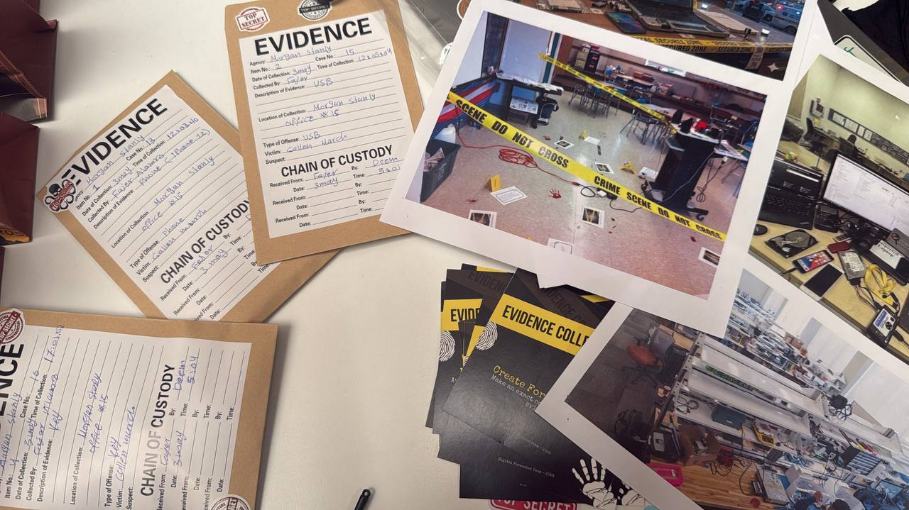
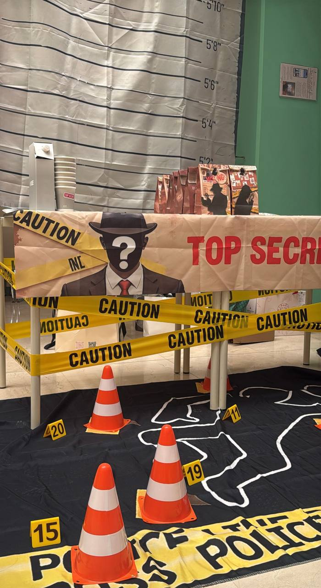

A live cybercrime investigation based on the real Morgan Stanley insider data breach
ForenX is a cybercrime and digital forensics awareness project based on the Morgan Stanley insider data breach (2011–2014). The project recreates the real case through a live investigation, where the team acts as digital forensics investigators instead of presenting the case through a traditional video or poster.
The experience begins with the case background and seized evidence, including a laptop, USB drive, phone, notebook, and confidential documents. Visitors then explore evidence preservation, chain of custody, forensic imaging, and digital analysis before reconstructing the incident timeline using clue cards.
Identified and bagged the laptop, USB drive, phone, and documents without altering originals.
Logged custody of every item and created a write-blocked forensic image before analysis.
Analyzed browser history, file transfers, and access logs to reconstruct the attack timeline.
Documented findings and had visitors reorder clue cards to rebuild the sequence of events.
From 2011 to 2014, a Morgan adviser stole client data through 6,000 unauthorized searches before being caught after the records appeared on Pastebin
Logs show repeated use of branch and group IDs that didn't belong to him, ~6,000 searches outside his assigned client group.
Browser history shows repeated uploads to galenmarsh.com, unblocked because the web filter classified it as "uncategorized."
A routine internet sweep found confidential records from ~900 client accounts publicly posted, triggering the internal investigation.
Forensic analysis showed the personal server was breached by a third party weeks before the data went public.
The court ordered forfeiture of the personal server and hardware; the adviser paid $600K restitution and lost his job.
All potential evidence was identified first, including the suspect's laptop, USB drive, phone, and printed confidential documents.
Every item was sealed in labelled evidence bags to prevent contamination, with original devices left unmodified.
A documented record tracked who collected each item, when, and how it was handled throughout the investigation.
A write-blocked forensic image was created before analysis, so investigators worked on a copy while the original stayed untouched.
Browser history, file transfers, USB records, and logs were analyzed to identify suspicious activity tied to the theft.
"Trust is not a security control! Access must be limited, monitored, and used responsibly."
Key takeaway shared with visitors at the end of the investigation

Evidence bags, chain of custody, and crime scene photos replicating real forensic evidence-handling

A fully staged investigation corner with police caution tape and evidence markers for a realistic visitor experience